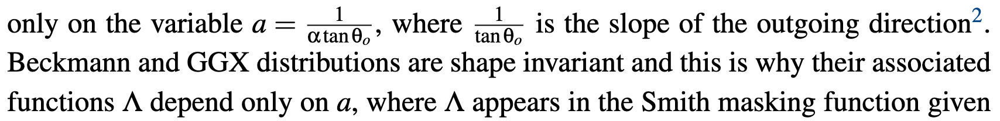

Deep in Microfacet BRDF
- Reference
- Some Microfacet Theory
- Microfacet-Based BRDFs
- Normal Distribution Functions
- Masking Functions
- Stretch Invariance of the Masking Function
- The Smith Joint Masking-Shadowing Function
Reference
- Microfacet Models for Refraction through Rough Surfaces, 2007
- Eric Heitz, Understanding the Masking-Shadowing Function in Microfacet-Based BRDFs, 2014 这篇paper真的不错，把BRDF, NDF, shadowing-masking的原理和关系讲的很清楚。
Some Microfacet Theory
Measuring Radiance on a Surface


Microfacet Statistics
Microfacet theory is a statistical model of the scattering properties of the micro-surface.
The Distribution of Normals
 D is actually the distribution of normals per square meter of the geometric surface and this is why it is measured in m2/sr and not in 1/sr
D is actually the distribution of normals per square meter of the geometric surface and this is why it is measured in m2/sr and not in 1/sr

Microfacet Projections

A Constraint on the Masking Function
- constraint 1 : projection area

- constraint 2 : microsurface profile
Microfacet-Based BRDFs
Distribution of Visible Normals
 注意， D的单位是m^2/sr, D_wo的单位是1/sr, 归一化指的是投影面积上的归一化
注意， D的单位是m^2/sr, D_wo的单位是1/sr, 归一化指的是投影面积上的归一化
Construction of the BRDF
- micro-BRDF

- macro-BRDF

- introducing masking-shadowing function

- w_g dot w_o 是normalize the integral by the projected area of the geometric surface on outgoing direction引入的
- w_g dot w_i 是入射光在投影面积上的分量引入的
Construction of The BRDF with Specular Microfacets


Construction of The BRDF with Diffuse Microfacets

The BRDF Normalization Test
The White Furnace Test
- BSDF BRDF+BTDF
- White Furnace Test
assume no absorption, no transmitted rays and all rays are reflected without energy loss
 https://github.com/knarkowicz/FurnaceTest 白炉测试的实现
https://github.com/knarkowicz/FurnaceTest 白炉测试的实现 - The Weak White Furnace Test
without Fresnel and shadowing


Good Summary

Normal Distribution Functions
How is the NDF really defined
https://www.reedbeta.com/blog/hows-the-ndf-really-defined/
the density of micro-area over the joint domain of macro-area and solid angle
Isotropic NDF
https://zhuanlan.zhihu.com/p/69380665

Blinn-Phong
Beckmann
GGX(Trowbridge-Reitz)
Generalized-Trowbridge-Reitz（GTR）
Masking Functions
The Smith Microsurface Profile
normal/masking independence
The Smith microsurface profile assumes that the microsurface is not autocorrelated.
derive the Smith masking function
把normal space 转换到slope space进行计算
properties
- uncorrelated assumption can cause artifacts
The V-Cavity Microsurface Profile
major principle
Each microsurface is composed of two normals ωm = (xm,ym,zm) and ωm′ = (−xm,−ym,zm) and the contribution of each microsurface is weighted by <ωm,ωg>D(ωm) in the final BRDF.
NDF
masking function
properties
- For a single microsurface, highly visible normals would occupy more projected area than less visible normals and thus have a higher contribution. There is no view dependence in the weighting (except that backfacing normals are discarded). This is why the V-cavity model poorly incorporates the effect of visibility and ends up simulating something close to a normal map.
- no such effect of V-cavity model that BRDF distribution shifted toward the outgoing direction as roughness increase

Non-Physically Based Masking Functions
what is "physically based"
The Implicit Masking Function
 does not satisfy the conservation of the projected area
does not satisfy the conservation of the projected area
The Schlick-Smith Masking Function
The Kelemen Masking Function
Summary
The real reason to choose it is that Smith’s formula is the exact masking function under the assumption of the chosen microsurface profile (i.e. normal/masking independence).

Stretch Invariance of the Masking Function
Investigate the invariance property of the masking function and of the distribution of slopes when the configuration is stretched.
Masking Probability Invariance
After stretching, occluded rays are still occluded and unoccluded rays are still unoccluded --- the masking probability is invariant to configuration stretching when all of the slopes involved in the configuration are scaled at the same time.
The Distribution of Slopes
- the distribution of heights of the microsurface is often denoted P1(h)
- distribution of slopes of the microsurface
注： tan的倒数是1/ (cos^2)
Isotropic Shape-Invariant Distributions of Slopes
Shape Invariance
- changing roughness is equivalent to stretching the distribution without changing its shape
- the masking function depends

Beckmann Distribution
GGX Distribution
Shape-Variant Distributions
Phong distribution

Anisotropic Shape-Invariant Distributions of Slopes
Shape Invariance
Derivation of the Masking Function
any configuration with an anisotropic shape-invariant distribution can be trans- formed back to a configuration with an isotropic distribution
Anisotropic Beckmann Distribution
Anisotropic GGX Distribution
More Generalization
Arbitrary Shape-Invariant Distributions
An important property of shape-invariant distributions is that all of the information required for the masking function is contained in the same 1D function Λ, for any roughness or anisotropy.
Non Axis-Aligned Stretching

{kind=link}
{kind=link}
{kind=link}
{kind=link}
{kind=link}
{kind=link}
{kind=link}
{kind=link}
{kind=link}
{kind=link}
{kind=link}
{kind=link}
{kind=link}
{kind=link}
{kind=link}
{kind=link}
{kind=link}
{kind=link}
{kind=link}
{kind=link}
{kind=link}
{kind=link}
{kind=link}
{kind=link}
{kind=link}
{kind=link}
{kind=link}
{kind=link}
{kind=link}
{kind=link}
{kind=link}
{kind=link}
{kind=link}
{kind=link}
{kind=link}
{kind=link}
{kind=link}
{kind=link}
{kind=link}
{kind=link}
{kind=link}
{kind=link}
{kind=link}
Vertical Shearing and Non-Centered Distributions
The masking function is also invariant under vertical shearing, because the roughness and the normalization factor are invariant under shearing—which alters all the slopes, and hence the normal vectors—these might also be invariant under a rotation of the normals.
{kind=link}
The Smith Joint Masking-Shadowing Function
Separable Masking and Shadowing
does not model correlations between masking and shadowing, and therefore always overestimates shadowing since some correlation always exists
{kind=link}
Height-Correlated Masking and Shadowing
the more a microfacet is elevated within the microsurface, the more the probabilities of being visible for the outgoing direction (unmasked) and for the incident direction (unshadowed) increase at the same time. This form is accurate when the outgoing and incident directions are far away from each other, but overestimates shadowing when the directions are close.
{kind=link}
- derivation suppose that there is no directional correlation for masking from directions ωo and ωi, then the probability that a point at height h is visible from both directions is just the product of the probabilities
{kind=link}
{kind=link}
{kind=link}
Direction-Correlated Masking and Shadowing
Masking and shadowing are also strongly correlated when the outgoing and incident directions are close to one another.
{kind=link}
{kind=link}
{kind=link}